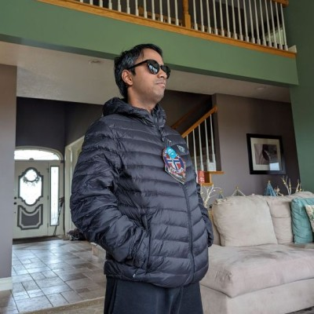

Welcome
Welcome, my name is Arun Graeff I'm 27 years old, I've lived in Iowa for 25 years.
I have two sisters one younger one older, and my parents. Right now im persuing a my Computer Science degree learning the different computer programming languages
and how they work. Many hobbies, interests would include outdoor biking, music, reading, video games, and tv shows.